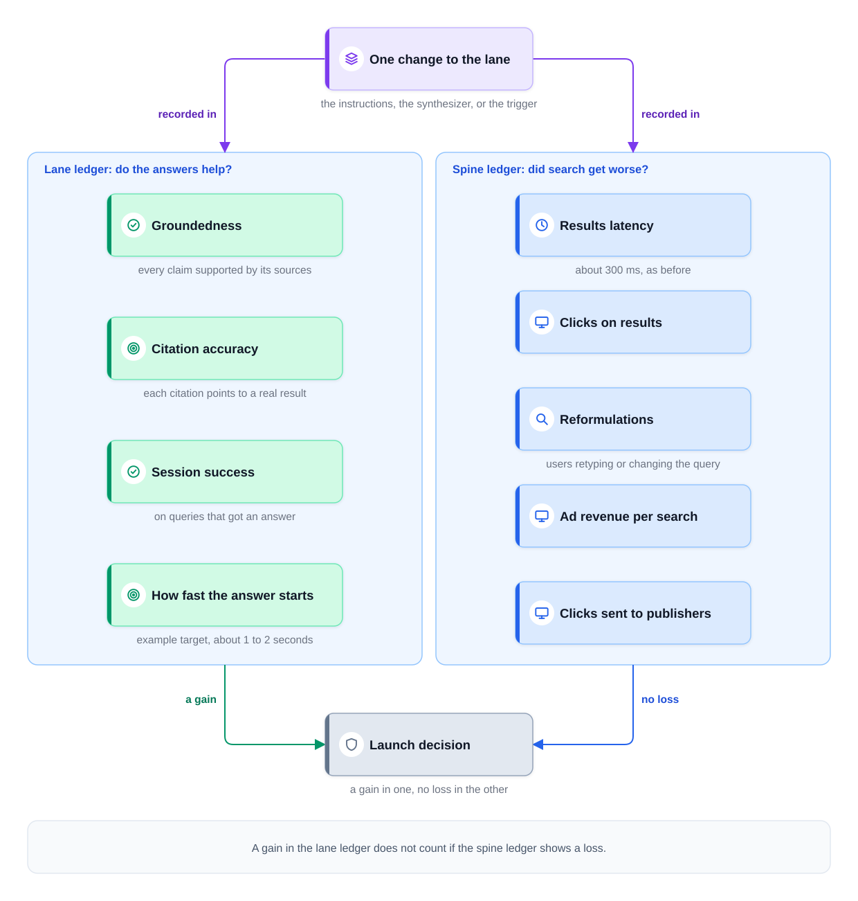
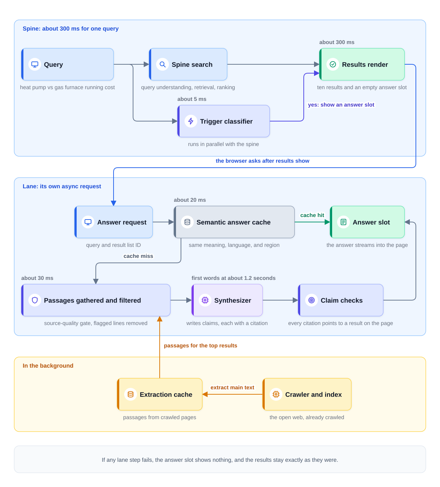
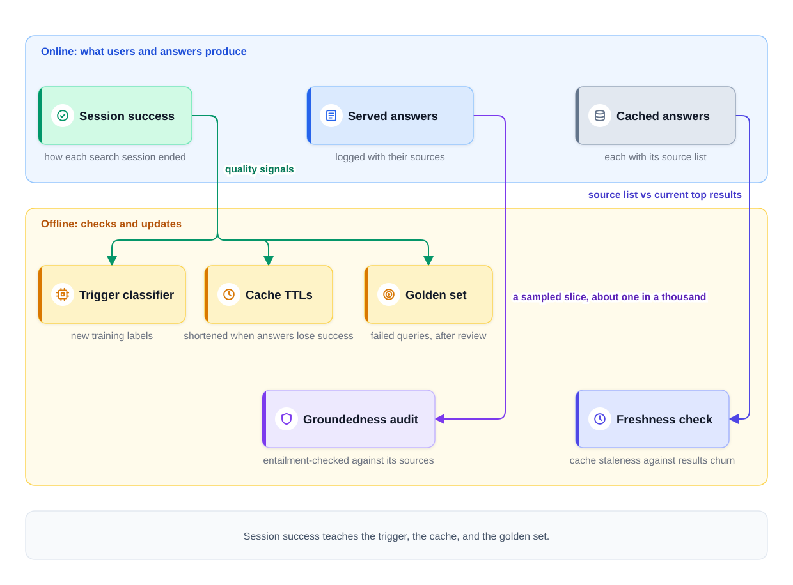

0% completed
Design AI-Powered Search
On This Page
Know the Vocabulary
Part 1: Frame the Problem
The Question Behind the Question
The Scale
The Spine and the Lane
The Two Governing Decisions
Part 2: Define Success
Two Ledgers for Every Change
When Leaving Fast Means Success
The Latency Posture
Part 3: Map the Data
The Corpus Already Exists
The Extraction Cache
Labels and Test Data
Freshness
Part 4: Pick the Model
Two Models, Two Ownership Choices
What the Trigger Decides
Why a Mid-Tier Synthesizer Wins
The Same RAG Pipeline, With Two Twists
Part 5: Design the Serving Path
The UX Contract
Follow One Query
Grounding the Answer
Ranking Well Is Not Enough
Sandboxing What the Pages Say
The Semantic Answer Cache
When the Answer Must Be Fresh
Part 6: Keep It Working
Session Success Feeds Three Places
Auditing Groundedness in Production
Watching Freshness
Measuring Whether the Lane Helped
Shipping Changes Safely
Part 7: Count the Costs
The Cost of Answering Everything
The Dollar Ledger
How the Lane Fails
The Strategic Tension
Part 8: Using This in an Interview
Part 9: Common Mistakes
Mistake 1: Building a New System
Mistake 2: Putting the Answer on the Results Clock
Mistake 3: Trusting Every Top Result
Mistake 4: Measuring the Lane Alone
FAQs
Key Takeaways
Check Your Understanding
Know the Vocabulary
This lesson uses the terms below many times. Read them once now, and come back here when a later section needs one.
- AI-powered search: A search engine that can show a short written answer above its usual list of results. The answer is built from the results and cites them.
- Incumbent: The system that already exists, already has users, and already earns money. In this lesson, the incumbent is a web search engine.
- Spine: The classic search path of the incumbent. A query goes in, and a ranked list of links comes out in about 300 ms.
- Lane: The new answer path. It writes a short answer from the top results and shows it in its own slot on the page, an answer box above the results.
- Trigger classifier: A small, fast model that decides, in a few milliseconds, whether a query should get a written answer at all.
- Synthesizer: The large language model (LLM) that writes the answer. To synthesize means to combine several sources into one answer.
- Passage: A short piece of text taken from one web page, such as one paragraph.
- Extraction cache: A store of passages that a background job pulled out of crawled pages ahead of time, so the lane can read them quickly.
- Claim: One statement of fact inside an answer, such as "a heat pump uses less energy in mild weather."
- Citation: A pointer from one claim to the search result that supports it.
- Groundedness: Whether every claim in an answer is supported by the sources the system supplied.
- Entailment: A claim is entailed by a passage when the passage, taken as true, forces the claim to be true as well.
- Semantic answer cache: A cache that reuses a stored answer when a new query means the same thing as an earlier one, even in different words.
- TTL: Short for time to live. It is how long a cached answer may be served before the system must build a new one.
- Zipfian traffic: A traffic pattern in which a small set of popular queries repeats very often, behind a long tail of rare queries.
- Indirect prompt injection: Hidden instructions placed inside content the system reads for the user, such as a web page, that try to change what the model does.
- Session success: Whether a user's search session ended with the need met. A session is the set of searches and clicks a user makes for one need.
- Golden set: A fixed set of test queries with known good behavior. The team runs it on every change before the change ships.
Part 1: Frame the Problem
The Question Behind the Question
An interviewer says, "Our search engine shows ten links. Add AI answers to it." Many candidates hear "build a RAG system" and start drawing one from scratch. RAG, or retrieval-augmented generation, looks up relevant text first and then lets a model write an answer from it. That misses what the question is really about.
The search engine already works. It crawls the web, keeps an index, ranks results, and answers in about 300 ms. Users trust it, and its ads pay for the company. So this is not a design from an empty page. It is an integration problem: extend search without harming what works.
State that first. Then make the recognition move, which means naming the known systems the question is built from. "This is the RAG pipeline from Module 5, attached to a search stack like the one in Module 3's search design. Retrieval already exists. My job is to add generation without breaking the search that pays for everything."
The Scale
The numbers below are illustrative assumptions for the interview, not facts about a real engine.
- Traffic: an average of about 10,000 queries per second (10K QPS), with higher peaks.
- Results latency: the results page must appear in about 300 ms, as it does today.
- Answer cost: about one cent per generated answer, including the passages the model reads. This is an example price, not a quote.
Notice what the numbers already say. A generated answer takes seconds, and the results take 300 ms. The answer cannot be on the same clock as the results. And a cent per answer, at 10K QPS, adds up fast, as Part 7 shows.
The Spine and the Lane
This lesson gives the two paths short names, because you will refer to them all through the answer.
The spine is the classic results path. It is the incumbent's product: query understanding, retrieval, ranking, and a page of links. It must keep its speed and its quality.
The lane is the new answer path. It runs next to the spine on its own request. It reads the top results, writes a short answer with citations, and fills one slot at the top of the page.
The rule between them is simple. The lane may read from the spine, but it may never slow the spine down or make it worse.
The Two Governing Decisions
Two decisions govern this whole design. Name both of them early, out loud.
- When to trigger the answer. Most queries do not need one. A user who types a brand name wants that brand's website, not a paragraph.
- How to ground the answer. Every claim must come from a real result on the page. The web is full of wrong, old, and hostile pages, so grounding is harder here than in a company's own documents.
Every later part of the design serves one of these two decisions.
Then state the scope. For example: "I will design text answers for English web search. Follow-up chat, image answers, and ads inside answers are out of scope." Confirm that this scope matches what the interviewer wants.
Part 2: Define Success
Two Ledgers for Every Change
Measuring this design works like double-entry bookkeeping. In double-entry bookkeeping, every transaction is written in two accounts, and the two must balance. Here, every change to the lane is written in two ledgers. A ledger is a written record of results.
- The lane ledger records whether the answers help. It tracks groundedness, citation accuracy, session success on queries that got an answer, and how fast the answer starts.
- The spine ledger records whether classic search got worse. It tracks results latency, clicks on results, reformulations, ad revenue per search, and clicks sent out to publishers.
A reformulation is a user retyping or changing the query right after seeing the results. It usually means the results missed.
A gain in the lane ledger does not count if the spine ledger shows a loss. That is the balancing rule. A lane that writes great answers but slows the results page is a failed launch.
The diagram below shows the two ledgers and the rule that joins them.

When Leaving Fast Means Success
In classic search, a user who leaves fast without clicking is hard to read. Often it means the results failed. Search teams usually treat it as a warning sign.
With an answer on the page, the same behavior can mean the opposite. The user read the answer, got what they needed, and left. Leaving fast can now mean success. This is sometimes called good abandonment, meaning the user left because the need was met.
So clicks alone can no longer measure success. The design measures session success instead. A session counts as a success when it ends without a reformulation and without the user coming back to search the same question soon after. A click on a citation also counts as a good sign. Each signal is noisy alone, so read them together.
The Latency Posture
The two paths get two different latency targets. The numbers are example targets, not guarantees.
- Results land in about 300 ms, always. This target does not change because the lane exists.
- The answer streams when it is ready. Its first words should appear within about 1 to 2 seconds. A cached answer can appear almost at once.
Notice the word "always." The results never wait for the answer. Part 5 turns this posture into a contract.
Part 3: Map the Data
The Corpus Already Exists
The corpus is the set of documents the answers draw from. Here, the lane uses the same open web that the incumbent has already crawled and indexed. There is no new crawl and no separate collection of documents.
This saves a great deal of work. The crawler, the index, and the ranker already run. The lane only needs the text of the pages it will read, in a form that is fast to fetch.
The Extraction Cache
Reading a full web page during a request is too slow. Pages are large, and most of their text is menus, ads, and comments. So a background job does the reading ahead of time.
When a page is crawled, the job extracts its main text and splits it into passages. It stores the passages in the extraction cache, keyed by the page's address, with the time of the crawl. At request time, the lane fetches passages for the top results in a few milliseconds.
Two properties of this data drive the hardening choices in Part 5.
- It is adversarial. Anyone can publish a web page. Some pages are wrong by accident. Some are written to trick search engines. Some now hide instructions aimed at the model that will read them.
- It arrives pre-scored by ranking. Every page already comes with signals from the spine. These include its rank for this query, a spam score, and the reputation of its site.
The first property is the problem. The second property is part of the answer, because the lane can use the spine's scores to decide which pages to trust.
Labels and Test Data
The lane needs labels for two jobs.
The trigger classifier learns from search logs. Every query is logged with whether an answer was shown and how the session ended. Over time, the logs show which kinds of queries end well with an answer and which end well without one. Human raters label a sample as well, because session signals are noisy.
The golden set tests every change. It holds a fixed list of queries, each with the behavior a good response must show. It includes queries that should get an answer and queries that should not. It also includes sensitive questions, and queries with thin evidence where the right behavior is no answer. Evaluating LLM Systems explains how a golden set is built and run.
Freshness
Results change at very different speeds. The top results for "how to boil an egg" may stay the same for years. The top results for a news event can change every few minutes. The lane must know which kind of query it is answering, because a stored answer is only as fresh as its sources.
Part 4: Pick the Model
Two Models, Two Ownership Choices
This design has two models, and the team treats them differently.
| Model | Its job | Who owns it | Why |
|---|---|---|---|
| Trigger classifier | Decide in milliseconds whether a query wants an answer | Trained and owned in-house | It learns from the engine's own logs, and it must be fast and cheap |
| Synthesizer | Write a short, cited answer from given passages | Bought from a model provider | General writing skill is expensive to build and easy to buy |
Your own team trains the trigger. No vendor has your query logs or your session outcomes, and those are its training data. It must also run in a few milliseconds on ordinary CPUs at 10K QPS. A small classifier can do that, such as a gradient-boosted tree model over query features. That is a model built from many small decision trees.
The synthesizer is bought, as a hosted model behind an API. An API is a defined way for one program to call another. The team owns the instructions, the context it receives, and the checks around it.
What the Trigger Decides
The trigger classifier's job is to decide in milliseconds whether a query wants a synthesized answer. A good starting baseline is a short list of rules. For example, a query made only of a website name never gets an answer. The classifier then learns the many cases the rules miss.
The table below shows how common query types are handled.
| Query type | Example | Trigger decision |
|---|---|---|
| Informational, multi-source | "heat pump vs gas furnace running cost" | Yes. Several sources must be combined, which is what an answer does well |
| Navigational | "examplebank login" | No. The user wants one website, and the first result is the answer |
| Transactional | "buy running shoes size 10" | No. The user wants to act on a store's page |
| Exact lookup | "Example Corp phone number" | No. One fact on one page is better shown directly |
| Medical, financial, or legal | "can I take ibuprofen with blood pressure pills" | Only with high-quality sources and stricter grounding |
| Breaking news | "earthquake just now" | Yes, but with fresh sources and a stated time, as Part 5 explains |
Notice the sensitive row. A wrong answer about health, money, or the law can hurt someone. So for these categories, the trigger fires only when the results include high-quality sources, such as known medical or government sites. The trigger runs before the results exist, so its yes here is provisional. Once the spine returns its results, the lane confirms that such sources are among them. The answer must then pass stricter grounding checks before it appears, such as a fast entailment check on every claim. When those conditions are not met, the user sees the results alone.
The trigger also chooses the answer's category. Later parts use that category to pick the cache TTL and the grounding rules, and to read experiment results.
Why a Mid-Tier Synthesizer Wins
It is tempting to buy the strongest frontier model available. For this job, a mid-tier model with strong citation behavior usually beats it.
The reason is that the job is narrow. The synthesizer does constrained synthesis over given passages. It does not need to know the world. It needs to stay inside the passages it was given, combine them clearly, and cite each claim. A model that is excellent at citing and slightly weaker at open reasoning fits that job better.
A mid-tier model is also cheaper and faster to start writing. At this traffic, both matter. Measure the choice on the golden set before deciding. State an upgrade condition too: "If the golden set shows citation misses on hard comparison queries, I will test a larger model for that category only."
The Same RAG Pipeline, With Two Twists
This lane is a RAG system. The RAG Pipeline walks through its stages. Two twists change it here.
- Retrieval already exists. The search results are the retrieval step. The spine has already found and ranked the best pages. So the lane does not build its own vector index of documents, a separate search structure for meaning. This makes the design simpler.
- The corpus is adversarial. A company's own documents are written by people who want them to be right. The open web is not. This makes the design harder, and most of Part 5 deals with it.
Part 5: Design the Serving Path
The UX Contract
UX stands for user experience. The UX contract is the set of promises the page keeps, whatever the lane does.
- Results render at once. The results page appears in about 300 ms, exactly as it does without the lane.
- The answer streams as its own async request. Async, short for asynchronous, means the request runs separately, and nothing else waits for it. The browser asks for the answer after the results are on screen, and words appear as they are written.
- The lane fails closed. If any lane step fails, times out, or is unsure, the answer slot shows nothing. The results stay exactly as they were.
These three promises keep the generative layer from harming core search latency. The slow, costly part never sits on the fast path.
Follow One Query
The steps below follow the query "heat pump vs gas furnace running cost." The times are illustrative and count from the moment the query arrives.
Step 1: The query arrives. The spine starts its usual work: query understanding, retrieval, and ranking.
Step 2: The trigger decides (about 5 ms). The trigger classifier runs in parallel with the spine. It says yes, with the category "home and energy," which is not a sensitive category.
Step 3: The results render (about 300 ms). The page appears with the ten results. Because the trigger said yes, the page also shows an empty answer slot with a short loading line.
Step 4: The browser asks for the answer. It sends a second request with the query and the ID of the result list it just showed. That ID matters. The answer must cite the same results the user can see.
Step 5: The semantic answer cache is checked (about 20 ms). The lane turns the query into an embedding, a list of numbers that captures its meaning. It looks for a stored answer with the same meaning, in the same language and region. Suppose this time it misses.
Step 6: Passages are gathered and filtered (about 30 ms). The lane fetches passages for the top results from the extraction cache. Hidden text was already dropped when each page was extracted. A source-quality gate drops pages with poor quality signals. A filter removes lines that were flagged as looking like instructions. About eight passages from five pages remain.
Step 7: The synthesizer writes (first words at about 1.2 seconds). The model receives fixed instructions and the passages, wrapped and labeled as data. It writes the answer as a list of claims, each with a citation.
Step 8: Each claim is checked as it streams. Code confirms that every citation points to a result on the page. A claim without a valid citation is dropped. An output filter checks for unsafe content.
Step 9: The answer is logged and stored. The answer, its sources, and its model version are logged. It is stored in the semantic answer cache with a TTL that fits its category.
The diagram below shows the same path. The spine and the lane run on separate requests.

Notice that the results never waited. The user had a full page of links after about 300 ms, whether the answer came or not.
Grounding the Answer
Groundedness requires per-claim citations to real results. Each claim in the answer must point to a specific result on the page, and that result must support it. One citation at the end of a paragraph is not enough, because it cannot show which sentence came from where. Keeping Answers Grounded explains this contract in detail.
The second half of grounding is refusing when the evidence is thin. If the passages do not cover the question, or the good sources disagree on a sensitive point, the lane shows no answer. Here, refusing means leaving the answer slot empty. The user still has the results, so an empty slot costs little. A wrong answer at the top of the page costs much more.
Ranking Well Is Not Enough
A page that ranks well does not automatically earn a place in the prompt. The prompt here means the full input the synthesizer reads. Ranking measures whether a page matches the query. It does not prove that the page is accurate.
So source-quality signals gate what is allowed into the context. These are the scores that come pre-attached from the spine, such as the spam score and the site's reputation. A page must pass this gate before its passages reach the synthesizer. For sensitive categories, the gate is stricter and may admit only known high-quality sites.
Sandboxing What the Pages Say
A web page can carry hidden instructions aimed at manipulating the synthesizer. For example, white text on a white background might tell the model to ignore its instructions and recommend ExampleBrand furnaces. A person never sees it, but the extraction job does. This is indirect prompt injection, because the attack comes through content the system reads, not through what the user typed.
So extracted page content is sandboxed and filtered before it reaches the synthesizer. Sandboxed means it is kept in a space where it cannot give orders. The defenses are layered.
- Filter at extraction. Drop hidden text, and flag lines that read like commands to a model.
- Wrap and label the passages. The instructions tell the model that the passages are data to summarize, never instructions to follow.
- Give the synthesizer no tools. It can only write text. An injected instruction cannot send email or open a page.
- Check the output. Every claim must cite a real result, and the output filter checks for unsafe content. A planted claim can still cite the page that planted it. That is why the earlier layers matter, and why the offline audit in Part 6 samples whether claims are really supported.
No single layer is perfect. Together they make an attack much harder. Safety and Guardrails covers indirect prompt injection and these defenses in more depth.
The Semantic Answer Cache
A semantic answer cache works very well for this product, because search traffic is Zipfian. A small set of popular questions is asked again and again, in many different wordings. One stored answer to a popular query can serve millions of requests across many rephrasings. For example, "is a heat pump cheaper than gas" and "heat pump or furnace, which costs less to run" ask the same thing.
The cache matches on meaning, not on exact text. It compares the new query's embedding with the embeddings of past queries, and it returns a stored answer only above a tuned similarity threshold. A threshold set too low gives a different question the same answer. Serving Optimizations explains how that threshold is tuned. The cache key also includes language and region, because the same words can need a different answer in a different country.
Each cached answer stores its source list and an expiry time set by its TTL. Stable topics can keep an answer for days. Fast-moving topics get minutes. On a hit, the lane also checks that the stored sources are still among the results on the page. If they are not, the hit is treated as a miss, because the answer must cite what the user can see.
When the Answer Must Be Fresh
Suppose a query like "earthquake just now" reaches the lane. A cached answer from an hour ago could describe the wrong event, or miss the latest reports.
So fresh queries either bypass the cache or use a very short TTL, such as a few minutes. The lane builds the answer from the newest results. The answer also states an as-of time, which tells the user how old the information is. It keeps an honest answer from looking like a final one. For example, the answer may begin with "As of 3:42 PM, based on four sources."
Part 6: Keep It Working
Session Success Feeds Three Places
The quality signals from session success feed three places.
- The trigger classifier. Sessions show where answers helped and where they hurt. Those outcomes become new training labels, so the trigger learns to fire more often where answers help and less often where they do not.
- The cache TTLs. Suppose cached answers in one category start losing session success after a few hours. Their TTL is too long, so it is shortened.
- The golden set. Queries that failed in production, after review, become new golden-set cases. The next change must handle them.
The diagram below shows these three paths, together with the two checks described next.

Auditing Groundedness in Production
Checking every claim of every answer with a strong verifier is too costly at this volume. So the design audits groundedness on a sample.
Every day, a sampled slice of served answers, such as one in a thousand, is entailment-checked offline against its sources. A verifier reads each claim and its cited passage, and decides whether the passage supports the claim. The verifier can be a small entailment model or an LLM judge, which is an LLM asked to grade each claim. Either one is first calibrated against human reviewers. Sensitive categories get a larger sample.
The audit produces a groundedness rate per category. A drop in that rate is a reason to stop a rollout or tighten the grounding rules.
Watching Freshness
Freshness is watched as cache staleness measured against how fast results churn. Churn means how often the top results for a query change.
For a sample of cached answers, the lane compares the answer's stored source list with the query's current top results. If most of those sources have left the top results, the answer is probably stale. A category whose results churn fast needs a shorter TTL.
Measuring Whether the Lane Helped
Offline checks cannot show whether the lane helped real users. That needs an online test. The test is a session-level A/B test against a no-lane control, read per category.
- Session-level means the metric is session success, not clicks on one page.
- A no-lane control is a random group of users who never see answers. The two groups differ only in the lane, so the comparison is fair.
- Per category means the result is read separately for each query category. The lane may help comparison questions and hurt how-to questions. One blended number would hide that.
The spine ledger supplies the guardrail metrics, which are numbers that must not get worse. Online Experiments and A/B Testing explains how such a test is set up and read.
Shipping Changes Safely
Every change to the instructions, the synthesizer, or the trigger passes the same gates. First, it runs on the golden set. Then it runs in shadow mode, where it answers live queries but nobody sees its answers. Then a canary release sends it a small share of traffic, then more. Each stage can roll back to the previous version.
Part 7: Count the Costs
The Cost of Answering Everything
Start with the naive plan: generate an answer for every query.
- 10,000 queries per second x 86,400 seconds in a day = 864 million queries per day.
- 864 million answers x
8.6 million per day.
That is far too much for one feature. The number also shows where the savings must come from.
The Dollar Ledger
The dollar ledger tracks what the lane costs. It has three dials.
- Trigger rate: the share of queries that get an answer.
- Cache miss rate: the share of triggered queries the cache cannot serve.
- Cost per answer: what one generated answer costs.
The daily cost is the product of all of them.
Daily cost = queries per day x trigger rate x cache miss rate x cost per answer
Suppose the trigger fires on 20 percent of queries, and half of those miss the cache. These are example values.
- 864 million x 0.20 = 172.8 million triggered queries.
- 172.8 million x 0.50 = 86.4 million generated answers.
- 86.4 million x
864,000 per day.
Cache hits and trigger calls cost far less than a generated answer, so this sketch leaves them out.
The dials multiply, so halving any one of them halves the bill. Each has its own levers. The trigger rate falls when the classifier learns where answers do not help. The cache miss rate falls with a well-tuned threshold and sensible TTLs. The cost per answer falls with fewer, shorter passages and a cheaper model. Verify current prices before you quote a final number. Inference Economics shows how to price one unit first.
How the Lane Fails
The lane fails closed. Failure means no render: the answer slot stays empty, and the results page is unchanged.
| What fails | What the user sees |
|---|---|
| The synthesizer is slow or rate-limited | No answer, and the full results page |
| The citation checks drop too many claims | No answer, rather than half an answer |
| The extraction cache is missing passages for the top results | No answer, because the evidence is thin |
| The semantic answer cache is down | Fresh answers for every triggered query, at a higher cost, or none if the budget limit is reached |
Notice that every row keeps the results. The spine never depends on the lane.
The Strategic Tension
One risk is not technical, and a strong candidate raises it unprompted. Answers that satisfy users without a click can cannibalize the click ecosystem the index depends on.
Publishers let search engines crawl their pages because search sends them visitors. Some advertisers pay because users click. If the answer replaces the click, publishers get fewer visitors. Over time, some may block crawlers or stop writing, and the web that feeds the answers gets thinner.
The design cannot settle this alone, because it is a business decision. But it can measure it and soften it. Track clicks sent to publishers in the spine ledger. Make citations visible and easy to click. Keep the trigger off where the result itself is the best answer.
Part 8: Using This in an Interview
The 30-second answer: "This is an integration problem: add an answer lane to a search engine without harming the results spine. The lane is RAG, but retrieval already exists, and the corpus is the adversarial open web. Two decisions govern it. A small in-house trigger classifier decides in milliseconds which queries get an answer. A bought mid-tier synthesizer writes from filtered passages, with a citation on every claim, and shows nothing when evidence is thin. Results always render in about 300 ms, and the answer streams on its own request. A semantic cache serves popular queries. I measure with two ledgers, and a session-level A/B test against a no-lane control decides, per category."
Likely follow-ups:
- "Why not answer every query?" At 10K QPS and a cent per answer, that is about $8.6 million a day. Many queries are also better served by the results alone, such as a login page or a phone number. The trigger keeps cost and harm down together.
- "How would this change for a customer-support help center?" The corpus turns cooperative, because the company writes its own articles. Injection filtering matters less, and keeping articles current matters more. The trigger can fire more often, because most queries there are questions.
- "And for product questions on an e-commerce site?" The refusal bar rises. A wrong claim about whether a part fits or is safe leads to returns and possible harm. So the lane answers only from the store's own product data and refuses when that data is silent.
Part 9: Common Mistakes
Mistake 1: Building a New System
A weak answer draws a full RAG system with its own vector index and crawler. A strong answer reuses the incumbent's index and results, and spends its time on the trigger and the grounding.
Mistake 2: Putting the Answer on the Results Clock
If the page waits for the answer, every search becomes seconds slower. The results render first, and the answer streams separately.
Mistake 3: Trusting Every Top Result
Rank is not truth. Source-quality signals gate the context, and extracted text is filtered as untrusted data.
Mistake 4: Measuring the Lane Alone
A lane can look great while search revenue or publisher clicks fall. Keep both ledgers, and test against a no-lane control, read per category.
FAQs
Q: Does the lane need its own vector index?
No. The search results are the retrieval step. The lane reads passages for those results from the extraction cache. The semantic answer cache does keep embeddings, but of past queries, not of web pages.
Q: Should the synthesizer be the strongest model available?
No. The job is constrained synthesis over given passages. A mid-tier model with strong citation behavior is usually a better fit, and it is cheaper and faster. Check that on the golden set.
Q: Is it a failure when the lane shows no answer?
No. An empty slot is a designed outcome when evidence is thin or a check fails. The user still has the full results.
Q: Can every served answer be entailment-checked live?
Not at this volume and cost, in this design. Live checks confirm that every citation is real. A sampled slice is entailment-checked offline, and sensitive categories get stricter checks.
Key Takeaways
- This is an integration problem. Extend search without harming it: the spine keeps its speed, and the lane adds answers on the side.
- Two decisions govern the design. When to trigger the answer, and how to ground it.
- Success is recorded in two ledgers. The lane ledger asks whether answers help, and the spine ledger asks whether search got worse. Leaving fast can now mean success.
- The trigger is owned, and the synthesizer is bought. A mid-tier model with strong citations fits a narrow job.
- Retrieval already exists, but the corpus is adversarial. Quality signals gate the context, passages are filtered, and every claim cites a real result.
- The page keeps a contract. Results render in about 300 ms, the answer streams on its own request, and the lane fails closed.
- Three dials set the bill. Trigger rate, cache miss rate, and cost per answer.
- In a system design interview, name the two governing decisions first. Then draw the spine and the lane, and price the naive plan to show why the trigger and the cache exist.
The next lesson, Design a Text-to-Image Service, moves to the opposite extreme. There, one request takes seconds of GPU time, so the whole design becomes a queue of jobs.
Check Your Understanding
1. Why should the results page never wait for the AI answer?
Show answer
Because the answer is slow, and the results are the core product. Results land in about 300 ms, while a generated answer takes seconds. The answer streams on its own async request, so search speed does not change.
2. A user asks for "examplebank login." Should the trigger fire?
Show answer
No. This is a navigational query. The user wants one website, and the first result already serves that need. An answer would add cost and get in the way.
3. A page ranks third for a health question but has a poor reputation score. Do its passages reach the synthesizer?
Show answer
No. A good rank does not earn a place in the prompt. Source-quality signals gate the context, and the gate is stricter for health questions.
4. The trigger fires on 10 percent of 864 million daily queries, the cache serves half of them, and an answer costs $0.01. What is the daily cost?
Show answer
**About
0 Comments
No comments yet. Be the first to start the discussion!
Reading Progress
0%
On This Page
Know the Vocabulary
Part 1: Frame the Problem
The Question Behind the Question
The Scale
The Spine and the Lane
The Two Governing Decisions
Part 2: Define Success
Two Ledgers for Every Change
When Leaving Fast Means Success
The Latency Posture
Part 3: Map the Data
The Corpus Already Exists
The Extraction Cache
Labels and Test Data
Freshness
Part 4: Pick the Model
Two Models, Two Ownership Choices
What the Trigger Decides
Why a Mid-Tier Synthesizer Wins
The Same RAG Pipeline, With Two Twists
Part 5: Design the Serving Path
The UX Contract
Follow One Query
Grounding the Answer
Ranking Well Is Not Enough
Sandboxing What the Pages Say
The Semantic Answer Cache
When the Answer Must Be Fresh
Part 6: Keep It Working
Session Success Feeds Three Places
Auditing Groundedness in Production
Watching Freshness
Measuring Whether the Lane Helped
Shipping Changes Safely
Part 7: Count the Costs
The Cost of Answering Everything
The Dollar Ledger
How the Lane Fails
The Strategic Tension
Part 8: Using This in an Interview
Part 9: Common Mistakes
Mistake 1: Building a New System
Mistake 2: Putting the Answer on the Results Clock
Mistake 3: Trusting Every Top Result
Mistake 4: Measuring the Lane Alone
FAQs
Key Takeaways
Check Your Understanding